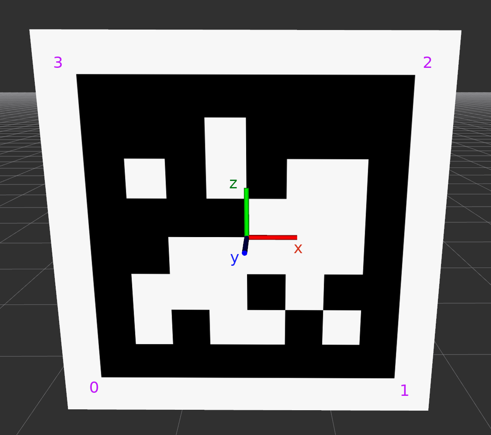

Measurements
Sometimes distance or other measurements are available that can act as constraints for tag and body poses. For example, one can measure the distance between two tags with a laser. Or a large number of tags are pinned against the same, straight wall such that the $y$ coordinate of all tags is known. TagSLAM has been designed such that implementation of new measurement constraints should be modular and fairly straight forward.
When measurements refer to tags, the following convention for orientation of the tag and corner numbering is assumed:

Distance measurements
If you have a laser pointer, you can measure the distances between tag
corners, and enter them like this into tagslam.yaml:
distance_measurements:
- my_measurement_1:
tag1: 24
tag2: 60
corner1: 0
corner2: 0
distance: 6.017
noise: 0.0002
- my_measurement_2:
tag1: 29
tag2: 60
corner1: 0
corner2: 0
distance: 6.002
noise: 0.00159
The noise parameter should be set according to the expected accuracy of the measurement (in meters), and will determine how strongly that constraint will enter the optimization process.
Once tagslam has completed, you can find an error analysis file in
$HOME/.ros/distance_diagnostics.txt. The meaning of the columns
is as follows:
optimizer |optimzed-
error |measured optimzed measured name of measurement
19.515 diff: -0.001 opt: 6.016 meas: 6.017 my_measurement_1
0.001 diff: 0.001 opt: 6.003 meas: 6.002 my_measurement_2
Coordinate measurements
Coordinate measurements are a way to impose constraints on the
absolute coordinates of the corner of a given tag. The following
example (in tagslam.yaml) sets the coordinates along the direction
[0.0, 0.0, 1.0],
i.e. the $z$-axis, of corner zero (bottom left) tags 6 and 17 to a
known value.
coordinate_measurements:
- tag6_z:
tag: 6
corner: 0
length: 2.070
noise: 0.010
direction: [0.0, 0.0, 1.0]
- tag17_z:
tag: 17
corner: 0
length: 0.619
noise: 0.010
direction: [0.0, 0.0, 1.0]
The noise parameter should be set according to the expected accuracy of the measurement (in meters), and will determine how strongly that constraint will enter the optimization process.
Once tagslam has completed, you can find an error analysis file in
$HOME/.ros/coordinate_diagnostics.txt. The meaning of the columns
is as follows:
optimizer |optimzed-
error |measured optimzed measured name of measurement
0.000 diff: 0.000 opt: 2.070 meas: 2.070 tag6_z
0.000 diff: -0.000 opt: 0.619 meas: 0.619 tag17_z